Borghi in diorama
Trenta borghi da esplorare nel browser. Non c’è nessun modello 3D: ogni casa, albero e lampione è uno sprite in pixel art, e ogni suo pixel riceve una profondità. Dal quinto in poi tutto è disegnato dal codice, terreno compreso. Cammina, parla con gli abitanti, ruota la vista, cambia l’ora del giorno.
WASD o frecce: cammina · Z: parla · Q / E: ruota · T: ora · O: ombre · su telefono: leva e tasto
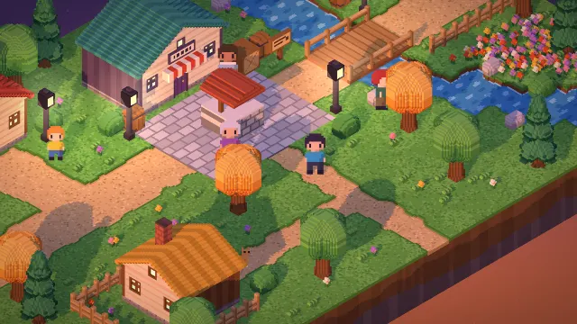
tramontoBorgo Duepixel
Il primo borgo: tre case colorate, una bottega e un pozzo. Sprite segnaposto disegnati dal codice.
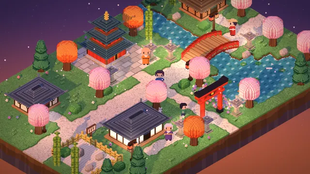
tramontoBorgo delle Lanterne
Una pagoda, una casa del tè e un portale rosso, con lanterne di pietra lungo la strada. Pagoda e case nascono da una facciata ripetuta sui quattro lati.
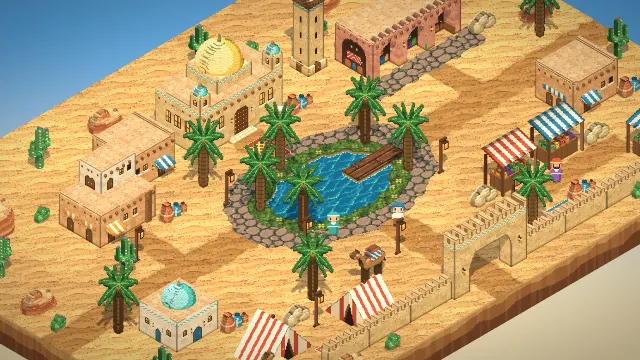
giornoBorgo delle Dune
Un bazar, una torre di guardia, un cammello e un pontile sull’acqua. Gli oggetti nascono dal codice già con la loro profondità; il terreno viene da un foglio di mattonelle.
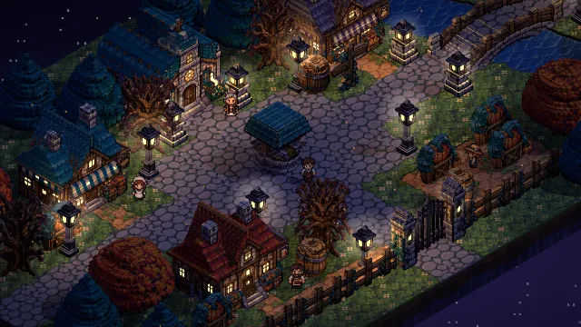
notteRavenbrook
Una chiesa, una locanda e un forno illuminati dalle finestre. Tutto viene da tre fogli generati da un modello di immagini e riportati alla griglia di pixel vera.
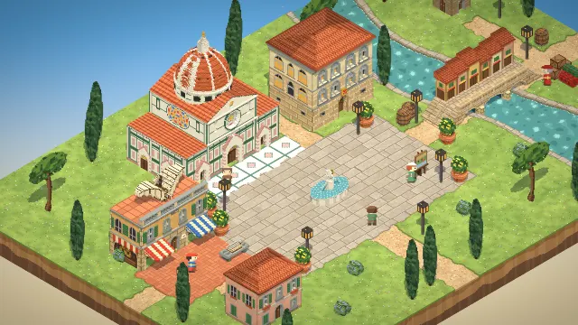
giornoBorgo di Leonardo
Una cattedrale con la cupola a costoloni, la bottega del maestro con la macchina volante sulla terrazza e un ponte coperto di botteghe sul fiume.
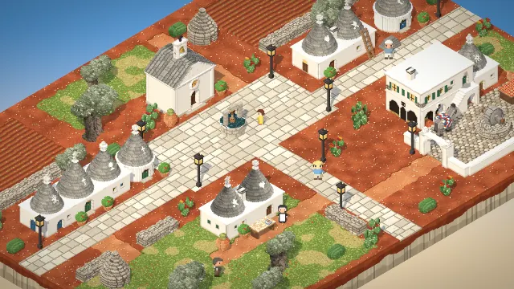
giornoBorgo dei Trulli
Trulli bianchi con i coni di pietra e i segni di calce, una chiesetta, una masseria con la corte e un uliveto secolare.
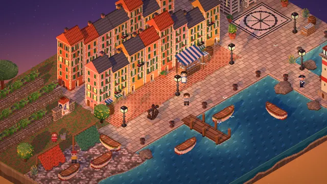
tramontoBorgo di Mare
Case alte e strette color ocra e rosa, un faro sul molo, gozzi tirati in secco e reti stese ad asciugare.
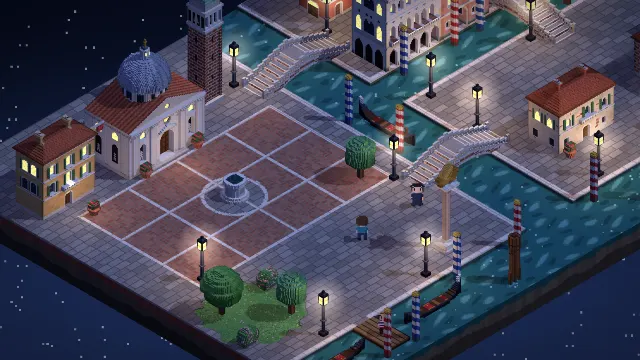
notteBorgo della Laguna
Due rii, tre ponti a gradini, un palazzo gotico col portico sull’acqua, un campanile e una chiesa con la cupola.
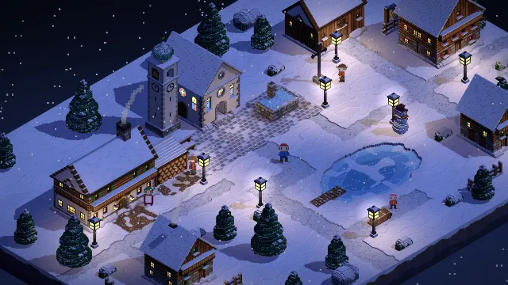
notteBorgo delle Nevi
Una chiesa col campanile a cipolla, una locanda, baite sotto la neve e un laghetto gelato.
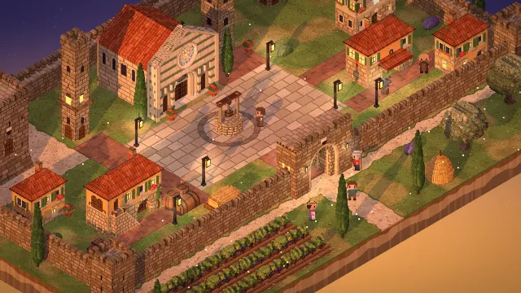
tramontoBorgo del Castello
Una rocca, una pieve con il rosone e tre torri alte e strette dentro le mura merlate; fuori, la vigna, gli ulivi e i cipressi.
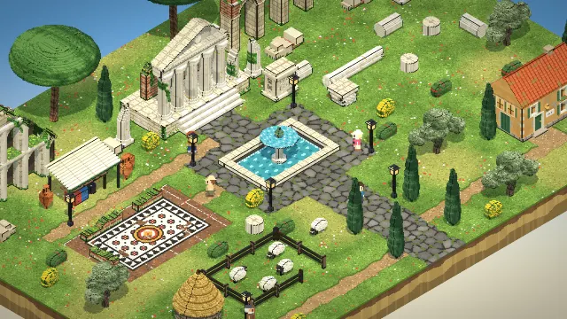
giornoBorgo delle Rovine
Un tempio a sei colonne, un acquedotto spezzato, mezzo anfiteatro e un mosaico nello scavo, tra pini, pecore e archeologi.
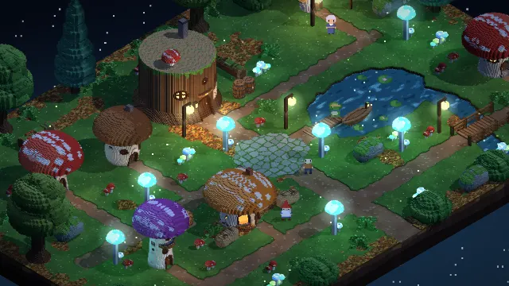
notteBorgo dei Funghi
Case-fungo con i pois, una taverna in un ceppo e funghi luminosi intorno a uno stagno, in una radura di muschio.
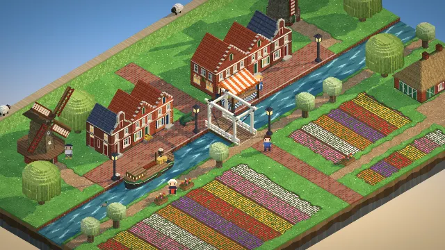
albaBorgo dei Mulini
Due mulini a pale ferme, case a gradini lungo il canale, un ponte levatoio bianco e campi di tulipani a strisce.
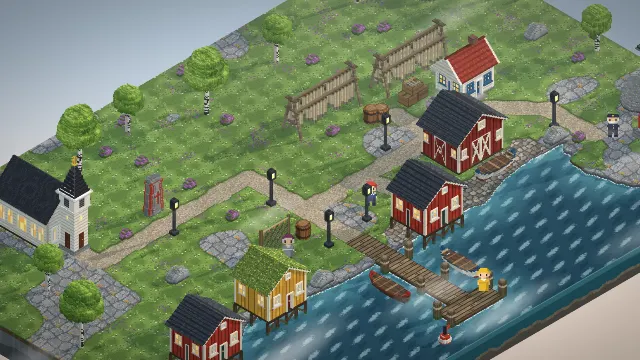
albaBorgo del Faro
Rorbu rossi e ocra su palafitte, un faro a strisce sul promontorio e lo stoccafisso appeso ad asciugare, nella nebbia del mattino.
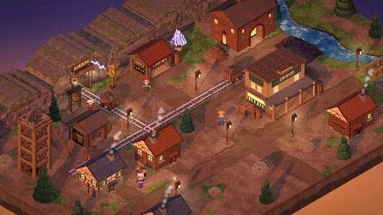
tramontoBorgo della Miniera
La galleria scavata nella roccia, il castelletto sul pozzo, carrelli sui binari e una fonderia che fuma.
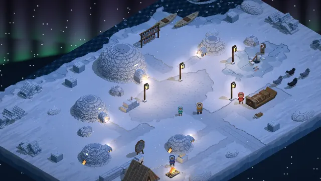
notteBorgo degli Igloo
Un accampamento sul ghiaccio marino sotto l’aurora: igloo di blocchi di neve, una tenda di pelle, cani e slitta.
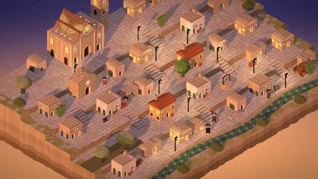
tramontoBorgo dei Sassi
Case di tufo e grotte scavate su cinque gradoni, scale a gradini, la chiesa nella roccia e la cattedrale in cima, sopra la Gravina.
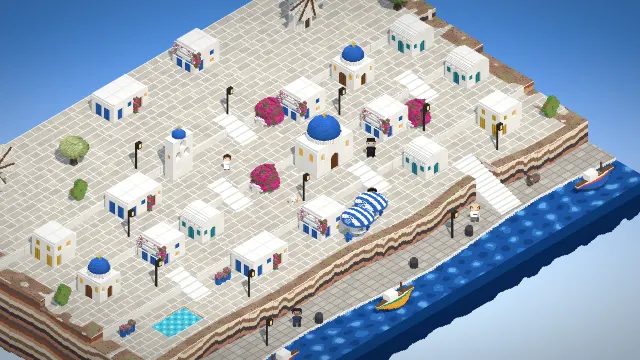
giornoBorgo Bianco
Case di calce e cupole blu sul ciglio di una scogliera a strati, i mulini in cima e il porticciolo con le barche in basso.
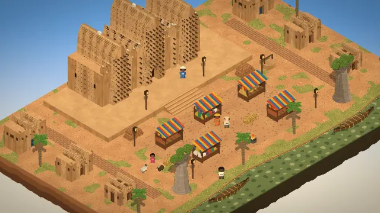
giornoBorgo di Fango
La grande moschea di terra cruda con le travi di palma che sporgono, il mercato sotto le tende, i baobab e le piroghe sul fiume.
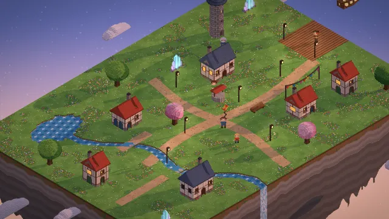
albaIsola nel Cielo
Un’isola che galleggia sulle nuvole: casette, la torre del vento, cristalli, un ruscello che cade dal bordo e l’aeronave al pontile.
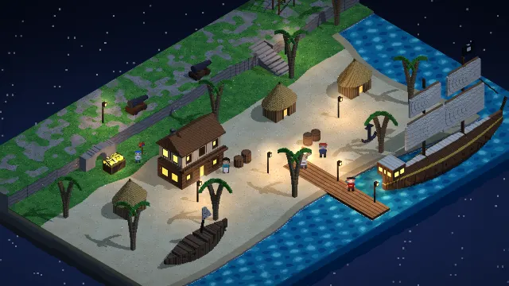
notteCovo dei Pirati
Una caletta di sabbia con la locanda, il veliero al pontile, il relitto, il falò e il tesoro sotto la scogliera.
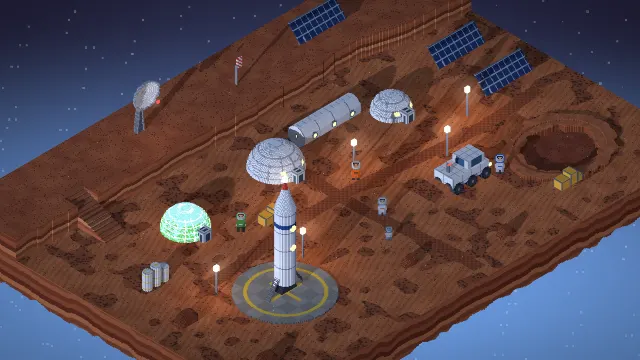
tramontoBase su Marte
Cupole, la serra, il razzo sulla piazzola e un cratere nella polvere rossa. Qui il tramonto è blu.
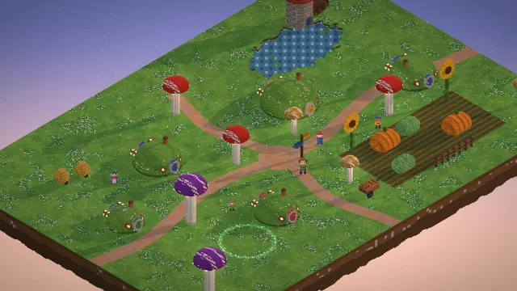
albaBorgo degli Gnomi
Collinette abitate con le porte tonde, funghi-lampione, zucche giganti nell’orto, il mulino sul laghetto e un cerchio delle fate che di notte si accende.
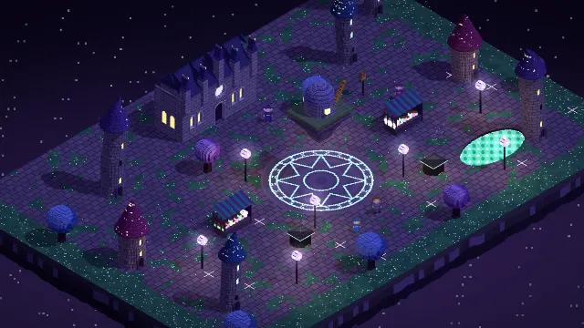
notteCittà dei Maghi
Torri storte coi tetti a punta e le stelle, l’accademia, un osservatorio che galleggia sopra la piazza e il cerchio magico che brilla nel lastricato.
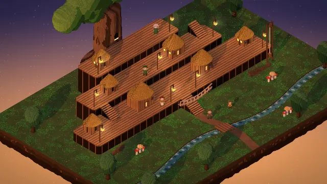
tramontoBorgo sull’Albero
Capanne su tre piattaforme di assi intorno a un albero gigante, scale, lanterne appese e un ruscello nel sottobosco.
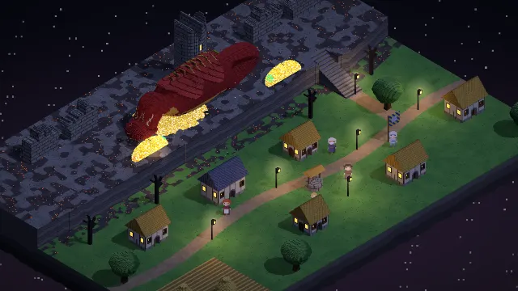
notteRocca del Drago
Un drago addormentato intorno alla torre di un castello in rovina, l’oro che brilla, e sotto la rupe un villaggio con le finestre accese.
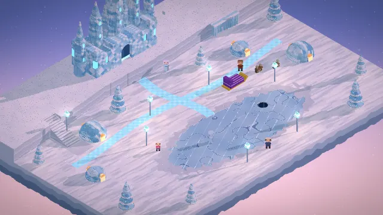
albaVillaggio dei Ghiacci Eterni
Il palazzo di cristallo, case a cupola di ghiaccio, alberi di cristallo, renne e un lago gelato dove pattina uno spirito.
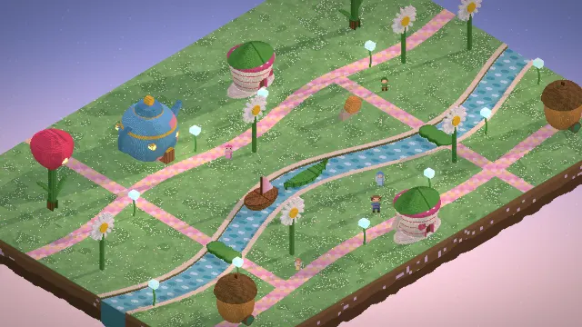
albaPorto delle Fate
Case nella teiera, nella tazza, nel tulipano e nella ghianda, ninfee per attraversare il fiume, barche di foglia e di noce, gocce di rugiada accese.
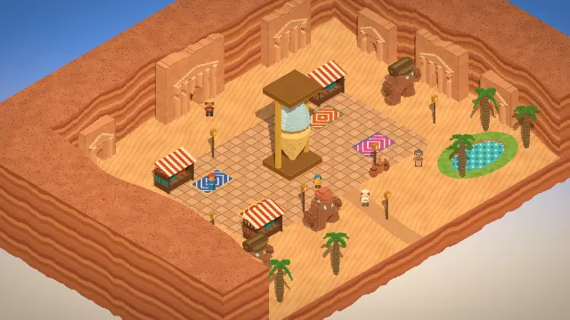
giornoMercato dei Golem
Un canyon di arenaria con le case scolpite nelle pareti, la clessidra gigante, i tappeti del mercato e golem d’argilla che portano i pesi.
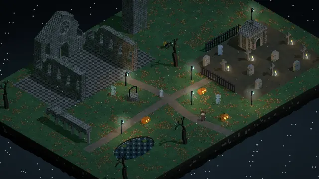
notteAbbazia dei Fantasmi
Il monastero in rovina nella nebbia, il cimitero con le croci storte e i lumini, e quattro fantasmi gentili, semitrasparenti.
Per confronto: Borgo Duepixel, prima versione — lampioni come luci puntiformi calcolate a ogni frame e sfocatura tilt-shift.